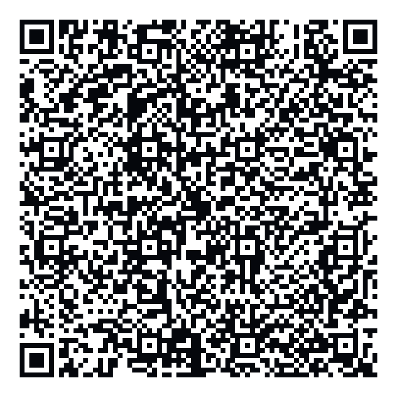

Escaneie com a câmera do aparelho novo / em factory reset, na primeira tela do setup.
vx.dono.app como Device Owner.adb shell dumpsys device_policy deve mostrar vx.dono.app/.DonoAdminReceiver como Device Owner.dpm set-device-owner antes de adicionar conta.COMPONENTE vx.dono.app/.DonoAdminReceiver
VERSÃO 3.1.1 • versionCode 20
APK vx-dono.apk
SHA-256 DO APK 897588fe8d5740e177b77b32651c22beae98429bf63ebc00281031a1027f9b9a
CHECKSUM APK iXWI_o1XQOF3t3syZRwivq6YQpv2PrwAKBAxoQJ_m5o
CHECKSUM ASSINATURA EOboK5UCV5nOPfLBRIym9PZSMo_QeDczQUzO9OArG8k
Os handlers GET_PROVISIONING_MODE e ADMIN_POLICY_COMPLIANCE estão presentes no APK — sem eles o Android 12+ falharia com “missing components or corrupted”.
{
"android.app.extra.PROVISIONING_DEVICE_ADMIN_COMPONENT_NAME": "vx.dono.app/.DonoAdminReceiver",
"android.app.extra.PROVISIONING_DEVICE_ADMIN_PACKAGE_DOWNLOAD_LOCATION": "https://vxvulgooficial.github.io/vx-protecao/assets/vx-dono.apk",
"android.app.extra.PROVISIONING_DEVICE_ADMIN_PACKAGE_CHECKSUM": "iXWI_o1XQOF3t3syZRwivq6YQpv2PrwAKBAxoQJ_m5o",
"android.app.extra.PROVISIONING_DEVICE_ADMIN_SIGNATURE_CHECKSUM": "EOboK5UCV5nOPfLBRIym9PZSMo_QeDczQUzO9OArG8k"
}
dpc/qr/gerar_qr.py depois de recompilar o APK. Ele recalcula os dois checksums sozinho.CRIADO POR VX VULGO • VX PROTEÇÃO 3.1.1